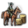
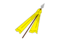
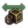
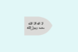
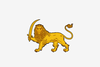
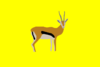
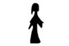

{kind=link}
| 埃及区域 | 马库里亚 |
| 几内亚区域 | |
| 非洲之角区域 | |
| 马格里布区域 | |
| 尼日尔区域 | 阿散蒂 博诺曼 达格邦 |
| 萨赫勒区域 | |
|
|
北非区域（Africa northern regions，非洲北部各区域）是非洲大区（Africa super-region）的一部分。这里的西南海岸有大量的可以让欧洲国家作为殖民美洲根据地的未殖民省份，而同时本土国家的人口密度也很大。这个区域的西北部居住着由于持续骚扰沿海而使欧洲人痛苦的马格里布诸国。东北部则是地区超级大国  马穆鲁克，不过他们大多数时间都忙于应对
马穆鲁克，不过他们大多数时间都忙于应对  奥斯曼的威胁。
奥斯曼的威胁。
在西部， 马里在四十年前开始衰落，数个曾经是它属国的
马里在四十年前开始衰落，数个曾经是它属国的 逊尼派苏丹国独立，陷入了军阀混战的局面。它们除了要和自己的逊尼派弟兄作战，还要对抗南部的
逊尼派苏丹国独立，陷入了军阀混战的局面。它们除了要和自己的逊尼派弟兄作战，还要对抗南部的 拜物教国家。在这个宗教复杂的环境下这些苏丹国可以通过与同宗或是异教开战来选择国家是走向教条主义还是神秘主义。在东部的非洲之角，
拜物教国家。在这个宗教复杂的环境下这些苏丹国可以通过与同宗或是异教开战来选择国家是走向教条主义还是神秘主义。在东部的非洲之角， 科普特正教的守护者
科普特正教的守护者  埃塞俄比亚正面对周边异教国家的联合包围。
埃塞俄比亚正面对周边异教国家的联合包围。
南部有着不断进行的宗教战争。不久后， 逊尼派国家会设法压缩西南的
逊尼派国家会设法压缩西南的 拜物教国家与东南的
拜物教国家与东南的 科普特正教国家的版图。他们能不能利用好宗教的优势拦住侵略者甚至反攻将会是一个问题。对世界的探索越深，
科普特正教国家的版图。他们能不能利用好宗教的优势拦住侵略者甚至反攻将会是一个问题。对世界的探索越深， 拜物教越能够更好地通过更换崇拜物适应不同的环境。而注重合作的的
拜物教越能够更好地通过更换崇拜物适应不同的环境。而注重合作的的 科普特正教在开局便拥有一个圣地与一个正在逐渐投入科普特正教怀抱的圣地，使得他们几乎在游戏开始时便能获得两个祝福。
科普特正教在开局便拥有一个圣地与一个正在逐渐投入科普特正教怀抱的圣地，使得他们几乎在游戏开始时便能获得两个祝福。
北非区域的分解说明如下：
政府类型
宗教
科技组
文化组
下列部分国家在1444年还不存在。任何达到要求的国家都可以成立或重建它们。括号中的年份是他们在历史上首次出现的年份。
下列国家在1444年在任何省份都没有核心。但可以被 分离主义叛军控制同文化出现。括号中的年份是他们在历史上首次出现的年份。
| 埃及区域 | 马库里亚 |
| 几内亚区域 | |
| 非洲之角区域 | |
| 马格里布区域 | |
| 尼日尔区域 | 阿散蒂 博诺曼 达格邦 |
| 萨赫勒区域 | |
| 中非区域 | |
| 东非区域 | 安泰莫罗 |
| 刚果区域 | 卡桑吉 |
| 南非区域 | |
| 不列颠区域 | 克兰里卡德 |
| 法兰西区域 | 阿朗松 阿马尼亚克 奥弗涅 阿维尼翁 |
| 伊比利亚区域 | |
| 低地区域 | |
| 意大利区域 | 阿奎莱亚 博洛尼亚 科西嘉 费拉拉 |
| 北德意志区域 | 亚琛 安哈尔特 |
| 斯堪的纳维亚区域 | |
| 南德意志区域 | |
| 巴尔干地区 | 亚该亚 |
| 波罗的海地区 | 但泽 爱沙尼亚 拉特加尔 |
| 卡帕提亚地区 | |
| 克里米亚地区 | 阿斯特拉罕 |
| 波兰地区 | 克拉科夫 马佐夫舍 |
| 俄罗斯地区 | 别洛奥泽罗 卡累利阿 |
| 鲁塞尼亚地区 | |
| 乌拉尔地区 | |
| 安納托利亞區域 | |
| 阿拉伯區域 | 亚丁 阿尼扎 |
| 高加索區域 | |
| 呼羅珊區域 | |
| 馬什里克區域 | 巴士拉 法德勒 伊拉克 黎巴嫩 叙利亚 |
| 波斯地區 | |
| 孟加拉地區 | 阿萨姆 巴斯塔 |
| 科羅曼德地區 | 安得拉 卡纳提克 京吉 贾夫纳 康提 |
| 德干地區 | 艾哈迈德纳格尔 |
| 印度斯坦地區 | 巴克尔根德 |
| 印度西部地區 | 巴格拉纳 敦达尔 |
| 緬甸地區 | 阿拉干 |
| 印度支那地區 | 安南 |
| 印度尼西亞地區 | |
| 馬來亞地區 | |
| 摩鹿加地區 | |
| 日本地区 | 阿伊努 赤松家 尼子家 安东家 朝仓家 |
| 朝鲜地区 | |
| 华北地区 | 晋 梁 |
| 华南地区 | 楚 淮 苗 闽 宁 |
| 西南地区 | 长生 大理 孟卯 蜀 彝 |
| 叛军成立的国家（没有核心） | 北条家 池田家 前田家 周 |
| 中亞區域 | 费尔干纳 哈萨克 希瓦 诺盖 |
| 東西伯利亞區域 | 察夫楚万尼 楚科奇 堪察加 霍京 |
| 滿洲區域 | 赫哲 |
| 蒙古區域 | |
| 西藏區域 | 不丹 古格 康 |
| 西西伯利亞區域 | 西伯利亚 |
| 加利福尼亞區域 | |
| 加拿大區域 | 阿尔冈昆 |
| 卡斯卡迪亞區域 | 奇努克 海达 |
| 五大湖區區域 | |
| 大平原區域 | 阿拉帕霍 |
| 哈德遜灣區域 | 阿西尼博因 黑脚 夏延 |
| 密西西比區域 | 阿比卡 阿尼尔科 阿塔哈奇 卡多 卡斯基 |
| 北美東北區域 | 阿布纳基 卡尤加 伊利 莱纳佩 莫希干 |
| 里奧格蘭德區域 | 哈西奈 利潘 梅斯卡莱罗 |
| 北美東南區域 | 奥尔塔马霍 |
| 巴西區域 | |
| 中美洲區域 | 坎佩奇 查克特马尔 乔尔蒂 |
| 哥倫比亞區域 | |
| 拉普拉塔區域 | |
| 墨西哥區域 | |
| 秘魯區域 | 卡哈马卡 查查波亚 |
| 上秘魯區域 | |
| 澳大利亚区域 | 阿翁提姆 |
| 大洋洲区域 | 夏威夷 |
| 可成立国家 | |
| 前殖民地国家 | |
| 叛军成立国家 | 察哈尔 伊特鲁里亚 吉马 卡累利阿 马耳他 普韦布洛 萨米 |
| CK2转档可得国家 | 阿萨辛 约姆斯维京 圣殿骑士团 |
注：这篇文章中一切数据来自于某国家第一次出现时的数据，即在其他时间点某国时，其可能拥有与表格中完全不同的数据。表格包含：[1] 1444年开局时存在的国家，[2] 1444年可被释放的国家，[3] 其他时间点存在的国家、可成立的国家、可被叛军释放出的国家，[4]如果某一区域内不存在任何国家，那么本表格将不会列出该区域，[5] 译名可能因为汉化版本的不同与是否开启动态地名存在差异。
| 努比亚的理念 |
此信息可能已落后版本，最后更新于1.35 ----注释
所有主流文化为 |
| +10% 国家税收 +1 外交关系 |
| −5% 陆军维护
|
|
|
注：拥有本地区的部分或所有省份为成立  阿拉伯和
阿拉伯和  埃及的先决条件；亚历山大（358）和伊布里姆堡（1234）为
埃及的先决条件；亚历山大（358）和伊布里姆堡（1234）为 科普特正教圣地；亚历山大对
科普特正教圣地；亚历山大对 东正教国家也十分重要。
东正教国家也十分重要。
| 国家 | 政府 | 宗教 | 科技组 | 理念 | 文化组 | 首都 | 备注 |
|---|---|---|---|---|---|---|---|
| 马库里亚 | 苏丹（努比亚） | ||||||
| 马穆鲁克 |
|
黎凡特（埃及） |
| 西非的理念 |
此信息可能已落后版本，最后更新于1.35 ----注释
|
| +15% 全国人力修正 +20% 劫掠速度 |
| +1 外交官
|
|
 皇家马厩
|
| 国家 | 政府 | 宗教 | 科技组 | 理念 | 文化组 | 首都 | 备注 |
|---|---|---|---|---|---|---|---|
 贝宁 贝宁
|
西非（约鲁巴） | ||||||
| 卓洛夫 |
|
萨赫勒（塞内冈比亚） | |||||
|  卡布 | 萨赫勒（塞内冈比亚） |
|
| 非洲之角的理念 |
此信息可能已落后版本，最后更新于1.35 ----注释
除索马里、提格雷文化及 |
| −10% 提升稳定度花费 +10% 全局税收修正 |
| +1 年度威望
|
|
 蓬特之地的传说
|
| 努比亚的理念 |
此信息可能已落后版本，最后更新于1.35 ----注释
所有主流文化为 |
| +10% 国家税收 +1 外交关系 |
| −5% 陆军维护
|
|
|
| 索马里的理念 |
此信息可能已落后版本，最后更新于1.35 ----注释
所有主流文化为 |
| +15% 贸易引导 −10% 步兵花费 |
| +20% 陆军上限
|
|
注：本区域内部分省份是成立  阿克苏姆、
阿克苏姆、 索马里或重建
索马里或重建  埃塞俄比亚必需的省份。阿克苏姆（1227） 为
埃塞俄比亚必需的省份。阿克苏姆（1227） 为 科普特正教圣地；塞米恩（2771）和登比亚（2772）是游戏中仅有的初始
科普特正教圣地；塞米恩（2771）和登比亚（2772）是游戏中仅有的初始 犹太教省份。
犹太教省份。
| 国家 | 政府 | 宗教 | 科技组 | 理念 | 文化组 | 首都 | 备注 |
|---|---|---|---|---|---|---|---|
| 阿达尔 |
|
库希特（索马里） | |||||
| 阿朱兰 |
|
库希特（索马里） | 摩加迪沙的宗主国 | ||||
| 阿洛迪亚 | 苏丹（努比亚） | ||||||
| 奥萨 |
|
库希特（阿法尔） |
| ||||
 贝扎 贝扎
|
|
苏丹（贝扎） | |||||
| 达莫特 | 库希特（阿姆哈拉） | ||||||
| 栋古拉 | 苏丹（努比亚） | ||||||
| 伊那瑞亚 | 库希特（锡达莫） | ||||||
| 埃塞俄比亚 | 库希特（阿姆哈拉） | 达莫特和 哈迪亚的宗主国 | |||||
| 芬吉 | 苏丹（努比亚） | ||||||
| 格勒迪 |
|
库希特（索马里） |
| ||||
| 哈迪亚 |
|
库希特（锡达莫） | |||||
| 哈勒尔 |
|
库希特（哈勒尔） |
| ||||
| 霍比奥 |
|
库希特（索马里） |
| ||||
| 詹吉罗 | 库希特（锡达莫） | ||||||
| 咖法 | 库希特（锡达莫） | ||||||
| 马吉尔廷 |
|
库希特（索马里） |
| ||||
| 马雷汉 |
|
库希特（索马里） | |||||
| 梅德利巴赫里 | 库希特（提格雷） | ||||||
| 摩加迪沙 |
|
库希特（索马里） | |||||
| 欧加登 |
|
库希特（索马里） | |||||
| 塞米恩 | 库希特（阿姆哈拉） |
| |||||
| 绍阿 |
|
库希特（阿姆哈拉） | 可以被 | ||||
| 瓦尔桑盖利 |
|
库希特（索马里） | |||||
| 瓦莱提 | 库希特（锡达莫） |
| 柏柏尔的理念 |
此信息可能已落后版本，最后更新于1.35 ----注释
所有 |
| −25% 海军损耗 +10% 陆军士气 |
| +10% 国际贸易力量
|
|
|
注：拥有本地区的部分或所有省份为组建  阿尔及尔和 的黎波里的先决条件。
阿尔及尔和 的黎波里的先决条件。
| 国家 | 政府 | 宗教 | 科技组 | 理念 | 文化组 | 首都 | 备注 |
|---|---|---|---|---|---|---|---|
| 阿尔及尔 |
|
马格里布（阿尔及利亚） | |||||
| 杰里德 |
|
马格里布（突尼斯） | |||||
| 非斯 |
|
马格里布（摩洛哥） |
| ||||
| 费赞 |
|
马格里布（突尼斯） | 被 | ||||
| 卡比利亚 |
|
马格里布（柏柏尔） |
| ||||
|  马拉喀什 |
|
马格里布（摩洛哥） | |||||
| 摩洛哥 |
|
马格里布（摩洛哥） | 马拉喀什、 苏斯和 塔菲拉勒特的宗主国 | ||||
| 姆扎卜 |
|
马格里布（柏柏尔） | |||||
|  苏斯 |
|
马格里布（柏柏尔） | |||||
| 塔菲拉勒特 |
|
马格里布（摩洛哥） | |||||
 得土安 得土安
|
|
马格里布（摩洛哥） |
| ||||
| 特莱姆森 |
|
马格里布（柏柏尔） | |||||
| 图古尔特 |
|
马格里布（阿尔及利亚） | |||||
| 的黎波里 |
|
马格里布（突尼斯） | |||||
| 突尼斯 |
|
马格里布（突尼斯） | 保证 费赞的独立 |
| 豪萨的理念 |
此信息可能已落后版本，最后更新于1.35 ----注释
|
| +1 外交官 +10% 国内贸易力量 |
| -10% 提升发展度花费
|
|
|
| 莫西的理念 |
此信息可能已落后版本，最后更新于1.35 ----注释
所有主流文化为 |
| −1 国家叛乱度 +10% 骑兵作战能力 |
| +1 外交关系
|
|
|
| 西非的理念 |
此信息可能已落后版本，最后更新于1.35 ----注释
|
| +15% 全国人力修正 +20% 劫掠速度 |
| +1 外交官
|
|
|
注：拥有本地区的部分或所有省份为组建  索科托和 马西纳的先决条件。
索科托和 马西纳的先决条件。
| 国家 | 政府 | 宗教 | 科技组 | 理念 | 文化组 | 首都 | 备注 |
|---|---|---|---|---|---|---|---|
| 阿散蒂 | 西非（阿肯） | ||||||
 博诺曼 博诺曼
|
西非（阿肯） | ||||||
| 达格邦 | 西非（达贡巴） | ||||||
| 达荷美 | 西非（丰） | ||||||
 法达恩古尔马 法达恩古尔马
|
西非（莫西） | ||||||
| 富洛 | 萨赫勒（富拉尼） | 可以被 分离主义叛军成立
1490年后可因事件出现 | |||||
| 豪萨 | 萨赫勒（豪萨） |
| |||||
|  杰内 |
|
曼德（博若） | |||||
| 卡诺 | 萨赫勒（豪萨） | ||||||
| 卡齐纳 |
|
萨赫勒（豪萨） | |||||
| 孔 |
|
曼德（朱拉） | |||||
 马里 马里
|
|
曼德（马里） | |||||
| 努佩 |
|
西非（努佩） | |||||
| 奥约 | 西非（约鲁巴） | ||||||
| 塞古 | 曼德（班巴拉） |
| |||||
| 滕科多戈 | 西非（莫西） | 可被 瓦加杜古释放 | |||||
| 瓦加杜古 | 西非（莫西） | ||||||
|  雅滕加 | 西非（莫西） | ||||||
| 赞多马 | 西非（莫西） | 可被 雅滕加释放 | |||||
| 扎造 | 萨赫勒（豪萨） |
| 努比亚的理念 |
此信息可能已落后版本，最后更新于1.35 ----注释
所有主流文化为 |
| +10% 国家税收 +1 外交关系 |
| −5% 陆军维护
|
|
|
| 西非的理念 |
此信息可能已落后版本，最后更新于1.35 ----注释
|
| +15% 全国人力修正 +20% 劫掠速度 |
| +1 外交官
|
|
|
| 国家 | 政府 | 宗教 | 科技组 | 理念 | 文化组 | 首都 | 备注 |
|---|---|---|---|---|---|---|---|
| 阿伊尔 |
|
萨赫勒（图阿雷格） | |||||
| 达尔富尔 | 苏丹（努比亚） | 1596年后历史剧本中可用 | |||||
| 卡奈姆-博尔努 |
|
萨赫勒（卡努里） | |||||
| 桑海 |
|
曼德（桑海） | |||||
| 廷巴克图 |
|
萨赫勒（图阿雷格） | |||||
| 瓦达伊 |
|
萨赫勒（通朱尔） | |||||
| 亚奥 |
|
萨赫勒（比拉拉） |
注：这篇文章中一切数据来自于某国家第一次出现时的数据，即在其他时间点某国时，其可能拥有与表格中完全不同的数据。表格包含：[1] 1444年开局时存在的国家，[2] 1444年可被释放的国家，[3] 其他时间点存在的国家、可成立的国家、可被叛军释放出的国家，[4]如果某一区域内不存在任何国家，那么本表格将不会列出该区域，[5] 译名可能因为汉化版本的不同与是否开启动态地名存在差异。